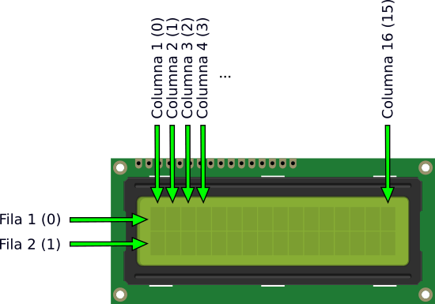
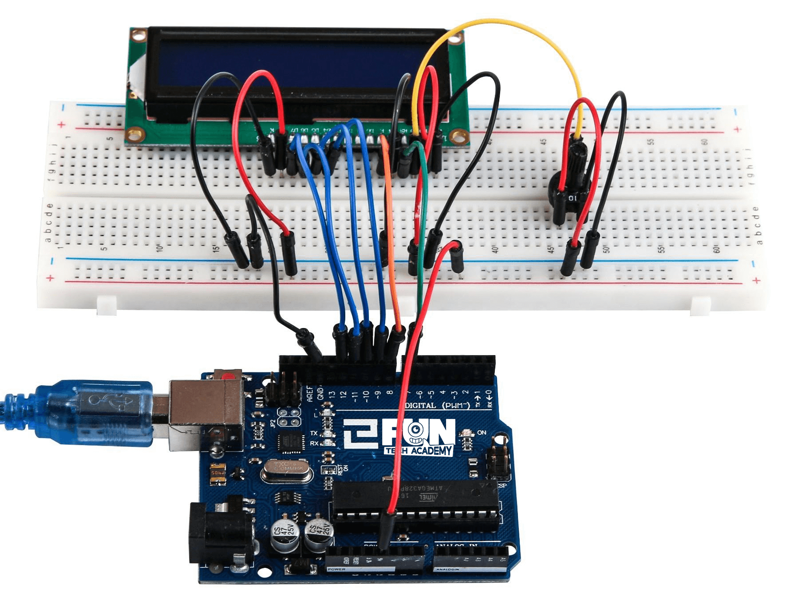

En este tema, aprenderemos cómo conectar y usar una pantalla LCD alfanumérica. La pantalla tiene una retro
iluminación LED.
Se pueden ver los rectángulos para cada carácter en la pantalla y los píxeles que componen cada carácter.
La pantalla es blanca y azul y además está diseñada para mostrar texto.
(1) x Placa Arduino
(1) x Módulo LCD 1602
(1) x Potenciómetro (10k)
(1) x Protoboard
(16) x M-M cables (cables de macho a macho)
El módulo LCD1602, o pantalla de cristal líquido de tipo 1602, es un tipo de módulo de matriz de puntos para mostrar letras, números y caracteres, etc. Se compone de posiciones de matriz de puntos de 5x7 o 5x11; cada posición puede mostrar un carácter.

Hay un punto entre dos caracteres y un espacio entre líneas, separando así los caracteres y las líneas. El
nombre de modelo 1602, significa que muestra 2 líneas de 16 caracteres.

En general, LCD1602 tiene puertos paralelos, es decir, controlaría varios pines al mismo tiempo. El LCD1602
se puede clasificar en conexiones de ocho puertos y cuatro puertos.
Los pines que tenemos que conectar a nuestra placa de arduino serían:
No lo olvides, el cable largo amarillo conecta el potenciómetro a la clavija 3 de la pantalla. El potenciómetro se utiliza para controlar el contraste de la pantalla.

Antes de cargar el script, asegúrate de que está instalada la biblioteca LiquidCrystal. El
archivo puedes descargarlo desde aquí
Una vez efectuado todo el cableado, descargaremos el script del siguiente
enlace y lo cargaremos como hemos aprendido.
Al subir el código a la placa Arduino, veremos que la pantalla muestra el mensaje Hola, mundo,
seguido de un número que cuenta de cero.
Evaluemos el script:
#include < LiquidCrystal.h >
Esto le dice a Arduino que queremos utilizar la biblioteca de LiquidCrystal. A continuación tenemos la línea que teníamos que modificar. Esto define qué pines de Arduino son para conectarse a que pines de la pantalla.
LiquidCrystal lcd(12, 11, 5, 4, 3, 2);
Después de subir este código, asegúrese de que se enciende la retroiluminación y ajustar el potenciómetro
girándolo hasta que aparezca el mensaje de texto.
En la función de setup, tenemos dos comandos:
lcd.Begin (16, 2);
lcd.Print ("Hola, mundo!");
La primera línea se indican cuántas columnas y filas tiene la pantalla. La segunda línea muestra el mensaje
que vemos en la primera línea de la pantalla.
En la función de loop, hay dos comandos:
lcd.setCursor(0, 1);
lcd.Print(Millis()/1000);
La primera línea establece la posición del cursor (donde aparecerá el siguiente texto) columna 0 y fila 1.
Los números de columna y fila comienzan en 0 en lugar de 1.
La segunda línea muestra el número de milisegundos desde que se restableció el Arduino.
Hasta ahora hemos visto cómo mostrar un texto en la pantalla LCD. Ahora vamos a ver otras funciones que tiene
la librería LiquidCrystal.
En este reto, colocaremos después de un texto, un cursor que se quede parpadeando.
Para ello, utilizaremos estas dos nuevas funciones de la librería:
lcd.Cursor();
lcd.noCursor();
- La función Cursor() muestra el cursor en la pantalla y en la posición que hayamos indicado.
- La función noCursor() elimina el cursor de la pantalla.
Ejemplo de Solución
El siguiente reto consiste en hacer que una palabra haga scroll a la derecha y a la izquierda sin salirse de la pantalla
Para ello, utilizaremos estas dos nuevas funciones de la librería:
lcd.scrollDisplayRight();
lcd.scrollDisplayLeft();
- La función scrollDisplayRight() hace que el texto se desplace a la derecha.
- La función scrollDisplayLeft() hace que el texto se desplace a la izquierda.
Ejemplo de Solución
Ahora vamos a mover una palabra por toda la pantalla. Lo que hará nuestro texto es desplazarse de izquierda a derecha de la pantalla y luego que aparezca en la fila inferior por la derecha y desaparezca por la izquierda, y así continuamente.
Para ello necesitaremos usar nuevas funciones.
De texto:
texto.length();
texto.substring(numero);
De la pantalla LCD:
lcd.clear()
- La función length() sirve para obtener el tamaño del texto, es decir, el número de
caracteres que tiene incluidos espacios, es decir, la función length() nos devuelve un número entero
indicando su tamaño.
- La función substring(numero) devuelve un trozo del texto. El número indica a partir
de qué letra vamos a coger por ejemplo si hacemos “HOLA MUNDO”.substring(2) nos devolverá “LA MUNDO”.
Recuerda que es un lenguaje de índice cero, el primer carácter del texto empieza por cero.
- La función clear() limpia totalmente la pantalla de los caracteres impresos.
Ejemplo de Solución
Ya sabemos como mover un texto por la pantalla. Vamos ahora a hacer que un cácter se mueva por la pantalla pero por donde nosotros queramos.
Escribiremos un carácter en la pantalla y utilizaremos un potenciómetro para moverlo por la pantalla. Si
ponemos el potenciómetro a la izquierda del todo, el carácter estará a la izquierda. Según vayamos moviendo
el potenciómetro a la derecha, el carácter se irá moviendo a la pantalla, hasta hacer coincidir el final
del potenciómetro con el final de la pantalla.
Ejemplo de Solución
Con todo lo que ya hemos aprendido, realizaremos un juego.
Poniendo la pantalla en vertical (tendríamos dos columnas de ancho por 16 filas de alto) crearemos un juego
en el que caerá un caracter de arriba a abajo en una columna aleatoria y con un cursor en la parte de abajo
que podamos mover mediante un potenciómetro a derecha e izquierda, trataremos de coger ese carácter con
nuestro cursor, acumulando puntos cada vez que se recoge.